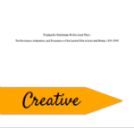
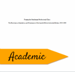
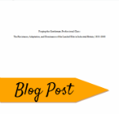

Writing Portfolio
Below are a few samples of my writing, which come from my various creative and academic pieces, as well as some of my blog posts. The creative samples contain a mixture of poems and short stories, while my academic papers represent the type of research I have conducted for my English and History degrees. The University Scholars Paper (USP) in particular provides a brief glance at the type of work I did for my English honors thesis, which examined Western socio-ethical ideologies and British power-structures in J.K. Rowling's Harry Potter series. I have recently submitted my USP paper to an undergraduate journal for publication. On another note, my blog posts provide a brief sampling of the type of writing I have experimented with on my blog Reading with Dragons: Musings about YA Books, Heroines, and Culture.
  